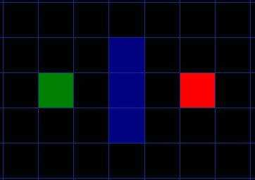
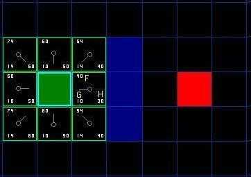
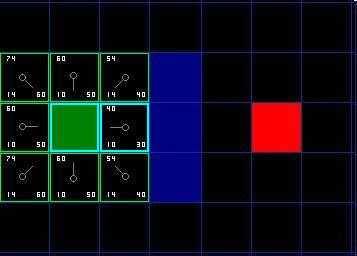
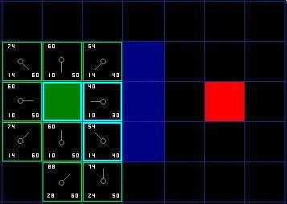
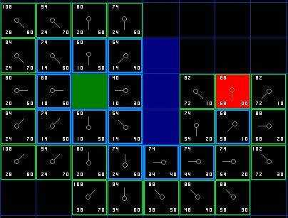

A*寻路算法
一、核心思想
A*算法的核心思想是：它结合了Dijkstra算法（保证找到最短路径）和贪心最佳优先搜索算法（快速朝向目标前进）的优点。
它通过一个代价函数 F(n) = G(n) + H(n) 来评估每个节点的优先级：
- G(n)：从起始点移动到当前节点 n 的实际代价。这是一个已知的、准确的值。
- H(n)：从当前节点 n 到目标点的预估代价。这是一个猜测值，也被称为启发函数（Heuristic Function）。
- F(n)：通过 G(n) 和 H(n) 的综合，来估算从起点经过节点 n 到达终点的总代价。算法总是优先探索 F(n) 值最小的节点，认为它最有可能在最佳路径上。
二、算法流程
算法需要维护两个集合：
1. 开放列表（Open List）：存放待评估的节点。初始时只包含起点。
2. 关闭列表（Closed List）：存放已评估完毕的节点，无需再次考虑。

1. 如上图所示，从起点A（绿色）开始，把它加入到open list中，查看起点A相邻的方格（忽略其中墙壁占领的方格，河流占领及其他非法地形的方格），把其中可走的（walkable）或可达到的（reachable）方格也加入到open list中。把起点 A 设置为这些方格的父亲 (parent node) ，然后所有子节点指向父节点。
2. 将A从open list中移除，放入close list中。现在从open list选一个与起点A相邻的方格，按照下面步骤重复。
3. 我们需要计算F = G + H. 首先计算G=从起始点移动到当前节点 n 的实际代价。这是一个已知的、准确的值。假设横向和纵向的移动代价为10，对角线的移动代价为14. 现在计算出该方格的G值的方法就是找出其父亲的G值，然后以此为基础上直线或者斜线方向上加10或14.
4. 关于H的启发函数常用的有曼哈顿距离和欧几里得距离，这里用的是曼哈顿距离，是指在一个坐标系中，从一个点到另一个点沿着网格线（水平或垂直）的距离。曼哈顿距离只允许朝上下左右四个方向移动。这里计算的时候要忽略路径中的障碍物，因为这是对剩余距离的估算，而不是实际值。

5. 把G和H相加，得到F。如上所示，所有open list都重复了此操作。然后从open list里选择F值最小的节点，做以下操作：
6. 从open list中取出来，放入到close list中.检查所有与它相邻的方格, 重复步骤1，此时当前方格为父节点。如果某个相邻的方格已经在open list中，则检查这条路径是否更优，即从起点经过当前方格，然后再到已存在在open list中的相邻的方格，该相邻方格的G值是否更小。如果没有，则不做任何操作，相反，如果G值更小，将该相邻方格的父亲设为当前方格，然后重新计算该相邻方格的F值和G值。

如上图所示，蓝框代表当前方格。我们在检查相邻方格中，发现右上角的方格已经存在 在open list当中。而从起点A到蓝框到右上角的相邻方格的G值为10+10 = 20， 大于直接斜角的14。 所以显然不是最优解。 当把四个已经在open list中的相邻方格都检查过后，没有发现更好的路径，因此不做任何改变。
7. 现在再次遍历open list, 我们需要选择除了起点A和蓝框方格的F值最小的那个方格。现在发现有两个方格的F都是54，从速度上考虑，优先选择最后加入open list的方格。

8. 如上图所示，这里右下角的格子要被忽略掉，因为如果你不穿过墙，你无法到达该格子。所以只剩下5个相邻方格，其中上面的和左上角的起点已经在close list了。现在只需要考虑左边的方格和下面的两个方格。检查发现左边的方格没有更小的G值，所以直接将下面的两个格子放入open lsit，然后将当前节点设置为他们的父节点，然后继续遍历open lsit即可。

不断重复这个过程，直到终点也被加入到open list。如上图所示。此时从终点按照箭头走，走到起点的路径就已经是最优路径了。
三、启发函数H(n)
1. 可采纳性（Admissibility）：
- 一个启发函数是可采纳的，意味着它永远不会高估从当前节点到目标的实际代价。
- 重要性：只有使用可采纳的启发函数，A*算法才能保证找到最短路径。
- 例如，在网格地图中，曼哈顿距离（只允许上下左右移动）和对角线距离（允许斜向移动）都是可采纳的。欧几里得距离（直线距离）也是可采纳的，因为它总是最短的。
2. 一致性（Consistency）/ 单调性（Monotonicity）：
- 一致性是可采纳性更强的形式。它要求对于任意节点 n 和其邻居 n'，满足：H(n) <= G(n, n') + H(n')。简单说，估计代价的下降不能超过实际的移动成本。
- 重要性：使用一致的启发函数，A*算法在将节点加入关闭列表后，就找到了到达该节点的最优路径，无需重新开放检查，效率更高。